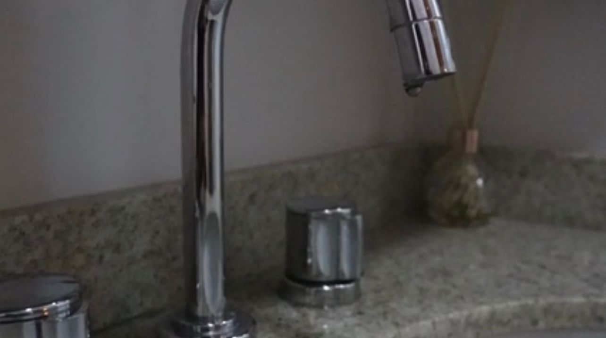
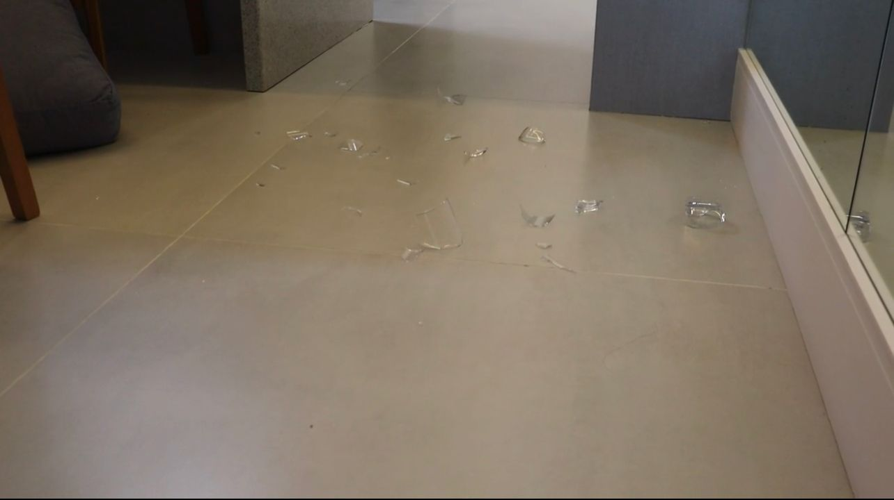
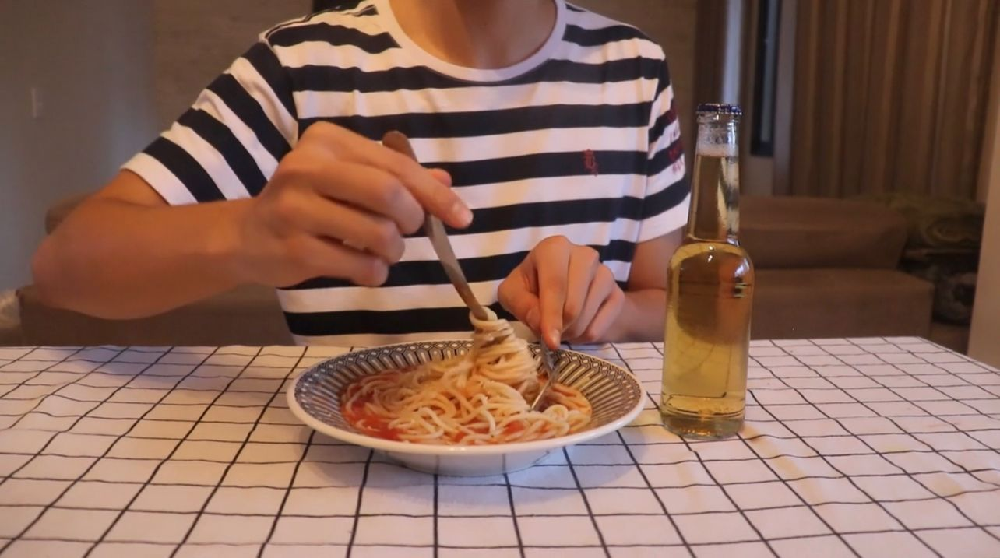
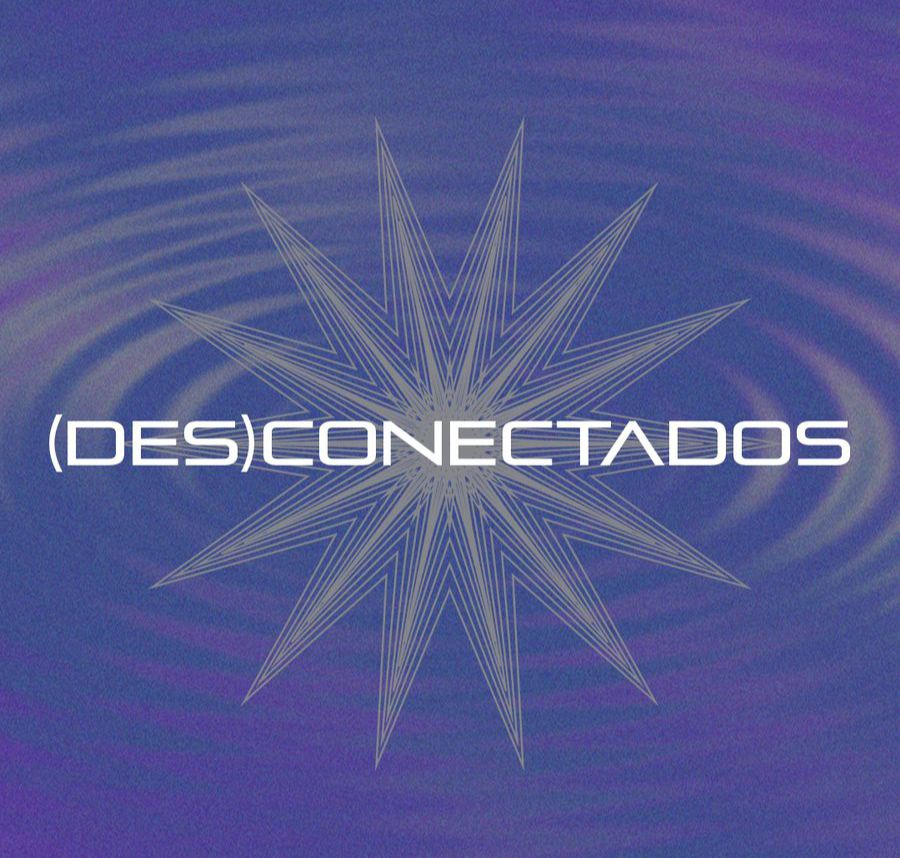

VAZAMENTO
•Curta produzido e dirigido apenas por mim para a disciplina de Linguagem, estética e gêneros do AV
•Traz a ideia de solidão e depressão do isolamento pandemico

PONTO DE VISTA
•Videoarte produzida e dirigida apenas por mim para a disciplina de história da arte
•Apresenta a ideia da importancia do ponto de vista para a análise dos momentos e como o psicologico afeta na percepção da vida

MANO NELLA PASTA
•Curta produzido por mim e minha equipe para a disciplina de historia da arte
•Com o tema de "distorção", a obra conta a jornada do protagonista no mundo "macarronistico" onde tudo é diferente e sua suposta volta para o mundo real

DESCONECTADOS
•Curta produzido pela minha sala de primeiro semestre de cinema (2023.1) para a disciplina de ciclos de produção, no qual eu atuei na parte de produção executiva e de set
•Aborda a inteligencia virtual e como ela afeta a comunicação principalmente entre as familias, tem como proposta mostrar que a IA pode ser uma aliada e não uma inimiga

SOUND AND VISION
•Curta produzido por mim e minha equipe para a disciplina de ciclos de produção
•Mostra o avanço do cinema ao longo das décadas e como ele afetou o jeito que nós como sociedade vivenciamos o novo audiovisual